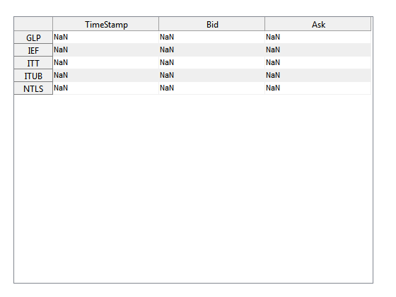
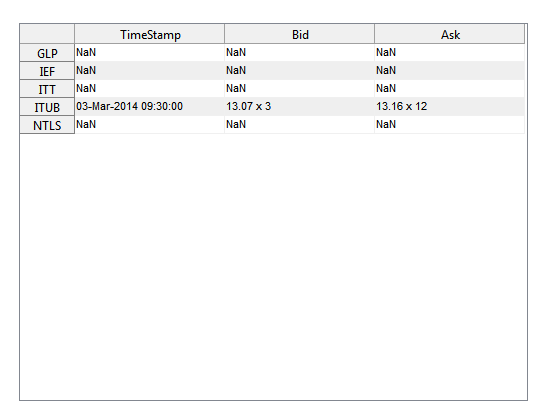
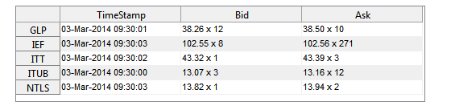
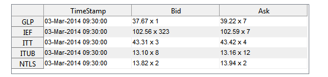

Create a Simple Data Feed Replay Object
This example shows how to create a simple object in MATLAB® that will stream data at a specified frequency.
Contents
Sample Data
Let's first load in some sample data. The data we'll use in this example is National Best Bid and Offer (NBBO) data.
addpath('Data') t = readtable('NBBO.csv'); symbolList = sort(unique(t.Symbol)) N = length(symbolList); t(1:5,:)
symbolList =
'GLP'
'IEF'
'ITT'
'ITUB'
'NTLS'
ans =
DateTime Symbol BidPrice BidExchange BidSize AskPrice AskExchange AskSize CompanyID Type
______________________ ______ ________ ___________ _______ ________ ___________ _______ _________ _______
'03-Mar-2014 09:30:00' 'ITUB' 13.07 'P' 3.00 13.16 'P' 12.00 23444.00 'quote'
'03-Mar-2014 09:30:00' 'ITUB' 13.07 'P' 4.00 13.16 'P' 12.00 23444.00 'quote'
'03-Mar-2014 09:30:00' 'ITT' 43.16 'Z' 1.00 43.69 'P' 3.00 14081.00 'quote'
'03-Mar-2014 09:30:00' 'IEF' 102.56 'P' 268.00 102.59 'P' 60.00 23870.00 'quote'
'03-Mar-2014 09:30:00' 'ITT' 43.17 'P' 3.00 43.69 'P' 3.00 14081.00 'quote'
Define Streaming Display
To see how our object streams information, let's create a simple diplay that shows the bid/ask values for eacht symbol. The table is created using uitable
f = figure; f.Name = 'National Best Bid and Offer'; colNames = {'TimeStamp','Bid','Ask'}; ut = uitable(f,'ColumnName',colNames,'RowName',symbolList); ut.Units = 'normalized'; ut.ColumnWidth = {150}; ut.Position(3) = ut.Extent(3); ut.Position(4) = 0.9; ut.Data = repmat({'NaN'},N,3);
Create a format string and add it to the display
quoteStr = @(q,v) [num2str(q,'%8.2f'),' x ', num2str(v,'%8.0f')]; quoteStr(t.BidPrice(1),t.BidSize(1)) updateDisplay = @(d) {d.DateTime{:},quoteStr(d.BidPrice,d.BidSize),... quoteStr(d.AskPrice,d.AskSize)}; ut.Data(4,:) = updateDisplay(t(1,:)); % ITUB's first record is in index 12
ans = 13.07 x 3
FOR Loop Example
One method to create display the table is to do it in a for loop.
tic for i = 1:100 loc = ismember(symbolList,t.Symbol(i)); ut.Data(loc,:) = updateDisplay(t(i,:)); drawnow; % force the display to update pause(0.25) end toc
Elapsed time is 26.388360 seconds.
This could have also been done in a while loop. However, note that both would have locked MATLAB from doing additional things while processing the block of code in the for loop.
Timers
An alternative approach, that does not lock MATLAB is to use a timer that updates the dispaly only when there is new data. Let's see how we can update the data every 0.25 seconds, while allowing MATLAB to do other things between updates.
The idea is to create a timer, that will run a callback, the updateDispaly function, every 0.25 seconds. Create a function that updates the display.
addpath('Charts') type updateNBBODisplayTimer
function updateNBBODisplayTimer(ut,t,symbolList)
% Helper function for timer updating of bid/ask table
% Copyright 2015 The MathWorks, Inc.
persistent indx
if ~exist('indx','var') || isempty(indx)
indx = 1;
else
indx = indx+1;
end
quoteStr = @(q,v) [num2str(q,'%8.2f'),' x ', num2str(v,'%8.0f')];
updateDisplay = @(d) {d.DateTime{1},quoteStr(d.BidPrice,d.BidSize),...
quoteStr(d.AskPrice,d.AskSize)};
loc = ismember(symbolList,t.Symbol(indx));
ut.Data(loc,:) = updateDisplay(t(indx,:));
drawnow;
Now create and start the timer.
myTimer = timer('ExecutionMode','FixedRate',... 'Period',0.25,... 'TimerFcn',@(~,~) updateNBBODisplayTimer(ut,t,symbolList)) start(myTimer)
Timer Object: timer-1
Timer Settings
ExecutionMode: fixedRate
Period: 0.25
BusyMode: drop
Running: off
Callbacks
TimerFcn: 1x1 function_handle array
ErrorFcn: ''
StartFcn: ''
StopFcn: ''
 Run a program while the display updates
for i = 1:100 disp(['Iteration ',num2str(i),' done!']); pause(0.1) end
Iteration 1 done! Iteration 2 done! Iteration 3 done! Iteration 4 done! Iteration 5 done! Iteration 6 done! Iteration 7 done! Iteration 8 done! Iteration 9 done! Iteration 10 done! Iteration 11 done! Iteration 12 done! Iteration 13 done! Iteration 14 done! Iteration 15 done! Iteration 16 done! Iteration 17 done! Iteration 18 done! Iteration 19 done! Iteration 20 done! Iteration 21 done! Iteration 22 done! Iteration 23 done! Iteration 24 done! Iteration 25 done! Iteration 26 done! Iteration 27 done! Iteration 28 done! Iteration 29 done! Iteration 30 done! Iteration 31 done! Iteration 32 done! Iteration 33 done! Iteration 34 done! Iteration 35 done! Iteration 36 done! Iteration 37 done! Iteration 38 done! Iteration 39 done! Iteration 40 done! Iteration 41 done! Iteration 42 done! Iteration 43 done! Iteration 44 done! Iteration 45 done! Iteration 46 done! Iteration 47 done! Iteration 48 done! Iteration 49 done! Iteration 50 done! Iteration 51 done! Iteration 52 done! Iteration 53 done! Iteration 54 done! Iteration 55 done! Iteration 56 done! Iteration 57 done! Iteration 58 done! Iteration 59 done! Iteration 60 done! Iteration 61 done! Iteration 62 done! Iteration 63 done! Iteration 64 done! Iteration 65 done! Iteration 66 done! Iteration 67 done! Iteration 68 done! Iteration 69 done! Iteration 70 done! Iteration 71 done! Iteration 72 done! Iteration 73 done! Iteration 74 done! Iteration 75 done! Iteration 76 done! Iteration 77 done! Iteration 78 done! Iteration 79 done! Iteration 80 done! Iteration 81 done! Iteration 82 done! Iteration 83 done! Iteration 84 done! Iteration 85 done! Iteration 86 done! Iteration 87 done! Iteration 88 done! Iteration 89 done! Iteration 90 done! Iteration 91 done! Iteration 92 done! Iteration 93 done! Iteration 94 done! Iteration 95 done! Iteration 96 done! Iteration 97 done! Iteration 98 done! Iteration 99 done! Iteration 100 done!
Stop the timer and delete it.
stop(myTimer) delete(myTimer)
Notice that both the for loop program, and the display were updating simultaneously.
Events and Listeners
The above example shows how to set up a streaming data source. But how can we add muliple functions that listen to and respond to data updates, each differently. We can use the concept of events and listeners from Object Oriented Programming to connect a datafeed with multiple traders (or strategies). First create a simple data feed service:
addpath('Agents') type SimpleStreamer
classdef SimpleStreamer < Streaming
% A really simple example of a streaming data source
% Copyright 2015 The MathWorks, Inc.
properties
Price = 0;
end
events
HaveNewData
PriceIsGoingUp
PriceIsGoingDown
end
methods
function obj = SimpleStreamer(period)
obj = obj@Streaming(period);
end
function step(obj)
p = rand*100;
disp(['Price is ',num2str(p)]);
notify(obj,'HaveNewData');
if p > obj.Price
notify(obj,'PriceIsGoingUp');
else
notify(obj,'PriceIsGoingDown')
end
obj.Price = p;
end
end
end
Our simple streamer is derived from a Streaming class, which will introduce shortly. The class consistis of an event declaration, as consctrution function (method), and a step function. First create an instance of the SimpleStreamer, with an update period of 1 second.
ss = SimpleStreamer(1)
ss =
SimpleStreamer with properties:
Price: 0
Period: 1.00
Timer: [1x1 timer]
Note that thhe dumbStreamer has two properties, Period and Timer. These are inherited from the Streaming class.
type Streaming
classdef Streaming < handle
% A superclass for creating a time-based streaming object
% Copyright 2015 The MathWorks, Inc.
properties (SetAccess = protected)
Period
Timer
end
methods
function obj = Streaming(varargin)
% Create timer object to control Streaming rate
if nargin < 1 || isempty(varargin)
varargin{1} = 2; % seconds
end
obj.Period = varargin{1};
obj.Timer = timer('ExecutionMode','FixedRate',...
'Period',obj.Period,'TimerFcn',@(~,~) step(obj));
end
function start(obj)
start(obj.Timer);
end
function stop(obj)
stop(obj.Timer);
end
function delete(obj)
delete(obj.Timer);
end
function setPeriod(obj,period)
if strcmpi(obj.Timer.Running,'on')
stop(obj);
restart = true;
else
restart = false;
end
obj.Timer.Period = period;
obj.Period = obj.Timer.Period;
if restart
start(obj);
end
end
end
end
This class is simply a timer class that will control a subclass by calling the step function (in the timer declaration), and has a start, stop, and delete set of functions for controling the streaming behavior of the subclass. Note that step in SimpleStreamer is the function being repatedly called every second. Let's see it in action.
start(ss) pause(5) stop(ss)
Price is 81.4724 Price is 90.5792 Price is 12.6987 Price is 91.3376 Price is 63.2359 Price is 9.754
Six random prices were generated. Add some traders (functions) to react to the new data. This is done by adding the traders as a listner to the streaming data feed.
Trader1 = @(~,~) disp(['Trader1: Buy ',num2str(round(rand*100)),' shares']); Trader2 = @(~,~) disp('Trader2: Buy 100 more'); Trader3 = @(~,~) disp('Trader3: Sell all my shares!'); addlistener(ss,'HaveNewData',Trader1); addlistener(ss,'PriceIsGoingUp',Trader2); addlistener(ss,'PriceIsGoingDown',Trader3); start(ss) pause(5) stop(ss) delete(ss)
Price is 27.8498 Trader1: Buy 55 shares Trader2: Buy 100 more Price is 95.7507 Trader1: Buy 96 shares Trader2: Buy 100 more Price is 15.7613 Trader1: Buy 97 shares Trader3: Sell all my shares! Price is 95.7167 Trader1: Buy 49 shares Trader2: Buy 100 more Price is 80.028 Trader1: Buy 14 shares Trader3: Sell all my shares! Price is 42.1761 Trader1: Buy 92 shares Trader3: Sell all my shares!
We just created a very simplistic automated trading system! Of course it disn't trade on any exchange, or use real data, but the mechanics to build a realistic system is the same. In the next example, we'll show a realistic system.